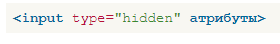
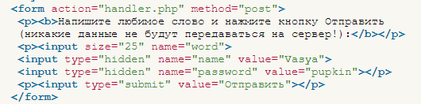

Скрытое поле
Часто возникает ситуация, когда требуется передать в форме некоторые промежуточные данные, которые не должны изменяться пользователем. Более того, такие данные не должны показываться пользователю, поскольку носят технический характер и обычно служат для передачи некоторой информации от страницы к странице.
Для этой цели применяется скрытое поле. Оно не отображается на странице и прячет своё содержимое от пользователя. Посетитель не может в него ничего внести или напечатать.
Синтаксис создания скрытого поля.

Атрибуты перечислены в табл. 1.
| Атрибут | Описание |
|---|---|
| name | Имя поля для его идентификации обработчиком формы. |
| value | Значение поля, определяющее, какая информация будет отправлена на сервер. |
Пример использования скрытых полей приведен в примере 1.
Пример 1. Использование скрытого поля

В данном примере показано создание двух скрытых полей, одно из них носит имя name и получает значение Vasya, а второе именуется password со значением pupkin. В результате отправки формы обработчику, указанному в атрибуте action, программа может легко прочитать эти данные и интерпретировать их по усмотрению разработчика.